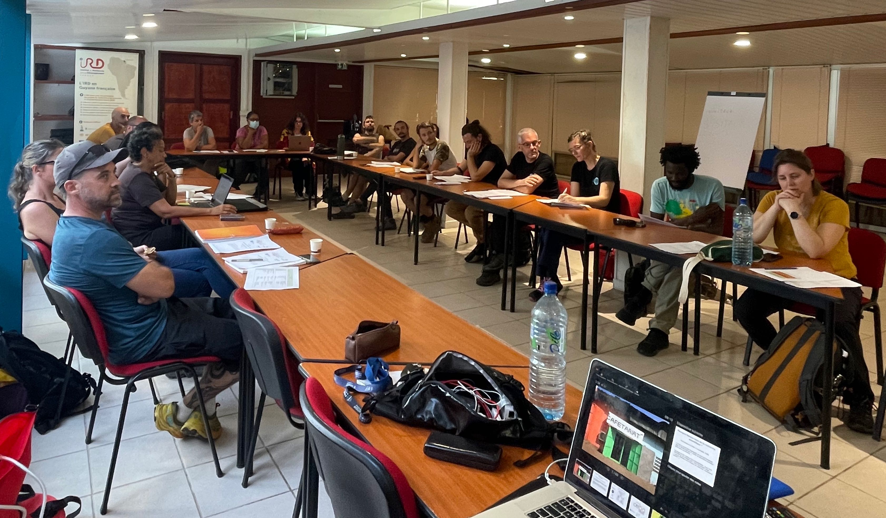

 ## Environnement informatique
Nous utiliserons un environnement de travail sur un serveur linux. Pour se connecter à cette machine, il sera nécessaire d’installer le logiciel MobaXterm pour windows. Pour téléverser ou télécharges des fichiers, le logiciel FileZilla sera nécessaire.
Aide-mémoire pour le travail en ligne de commande :
https://github.com/hbctraining
https://github.com/hbctraining/Intro-to-Unix-archived/blob/master/lessons/01_the_filesystem.md
une excellente formation linux
awk et la cheat sheet de awk
une excellente formation sur sed et awk
Commandes unix pour les débutants
Références pour les commandes unix
Les outils déployés sur le serveur linux:
SILVA est une base de données spécialisée sur les séquences d’ARNr des petites (SSU) et grandes (LSU) sous-unités ribosomales de tous les organismes des trois domaines du vivant (Archées, Bactéries, Eukaryotes). Les séquences dans SILVA ont été soumises à une procédure de contrôle de qualité et ont été alignées pour inferrer leur taxonomie.
UNITE EUKARYOTES https://unite.ut.ee/
ssh -XY USER@192.168.0.102
La mise à jour du Mk1C peut s’avérer compliquée mais elle est indispensable pour l’utilisation des kits ONT version 14 avec les dernières versions de flowcell.
De manière générale, je préfère réaliser les mises à jour en me connectant sur le mk1C (user minit).
Resoudre le problème de clef
sudo apt-key adv --fetch-keys https://cdn.oxfordnanoportal.com/apt/ont-repo.pubMise à jour vers minknow 23.07.12
https://help.nanoporetech.com/en/articles/6967756-i-m-having-difficulty-updating-minknow-on-my-mk1c
ssh minit@10.42.0.1 pw: minit
sftp -C minit@10.42.0.1 pw: minit cd /data get -r my_data_folder
Le processus de basecalling correspond au traitement des signaux bruts collectés lors du séquençage et enregistrés dans les fichiers au format pod5 (historiquement format fast5) pour obtenir les lectures (‘reads’) au format fastq. Pour des raisons opérationnelles informatiques, les lectures sont sauvegardées par lots d’un maximum de 4000 lectures et compressées pour économiser l’espace disque et sont par défaut au format *.fastq.gz
Le logiciel de basecalling proposé par défaut par ONT est aujourd’hui Dorado. L’opération de basecalling peut se faire pendant le séquençage en utilisant un mode rapide (fast basecalling) pour obtenir en temps réel des informations sur la qualité du séquençage. Néanmoins, la qualité des lectures ainsi obtenues n’est pas optimale, et il faut renouveler le basecalling une fois l’expérience de séquençage terminée en utilisant un mode de précision supérieure (high accuracy HAC ou superior accuracy sup basecalling).
Le logiciel de basecalling Dorado prend avantage de calculs réalisés sur carte graphique (GPU), il est incorporé au logiciel MinKNOW mais peut être installé séparément sur un calculateur dédié. On veillera à sauvegarder les données brutes (raw data) sous forme d’une archive compressée pour faciliter l’archivage et la copie.
tar -zcvf xp_sequencage_XYZ.tar.gz dossier_experienceLe logiciel de basecalling accepte de nombreux arguments, certains obligatoires et d’autres optionnels. Parmi les arguments obligatoires figurent le type de flowcell (FLO-MIN114 …), le kit (SQK-LSK114) et la configuration du modèle pour le basecalling (dna_r10_450bps_hac). Cette dernière information est importante à noter car elle peut être utile pour l’analyse des données par la suite.
On pourrait comparer une série de lectures avec différents modes de basecalling
####Génération des index pour le multiplexage Utilisation de https://github.com/audy/barcode-generator
(env_py27) endogene-egce:barcode-generator pollet$ bin/generate-barcodes --length 13 --min-dist 10 --max-stretch 1 --count 16
generating barcodes...
finished
>0
GCAGTGCGAGTAG
>1
TACGCAGCGTACG
>2
TGCTAGAGTAGAC
>3
ATCAGTCAGACGC
>4
GATCATGCACTGC
>5
GCGAGCGTCGAGA
>6
CTATCAGTACGTA
>7
ATGCTCTCTATAT
>8
AGTGTGTAGCGCA
>9
ACATACTACTCTG
>10
CATACTATCTCAT
>11
CGTCGACATGATGCalcul et vérification des différences entre index : Buschmann T, Bystrykh LV (2013). “Levenshtein error-correcting barcodes for multiplexed DNA sequencing.” BMC bioinformatics, 14(1), 272.
> library(DNABarcodes)
> all_indices<-read.table("all_indices_sel.txt")
> all_indices<-unlist(all_indices)
> analyse.barcodes(all_indices)
Description hamming seqlev levenshtein
1 Mean Distance 10.025 6.225 7.633333
2 Median Distance 10.000 6.000 8.000000
3 Minimum Distance 7.000 3.000 4.000000
4 Maximum Distance 13.000 9.000 10.000000
5 Guaranteed Error Correction 3.000 1.000 1.000000
6 Guaranteed Error Detection 6.000 2.000 3.000000
(env_py27) endogene-egce:barcode-generator pollet$ cat all_indices_sel.txt
AACATGTGGTAAG
ACAACCATTGGCA
ACATACTACTCTG
ACATCAGTAGTTC
ACGCGCTCTTATA
ACTTGTGCACCTG
AGCCTAGCCAACT
AGTGTGTAGCGCA
ATCAGTCAGACGC
CATACTATCTCAT
CGTCGACATGATG
GATCATGCACTGC
GCAGTGCGAGTAG
GCGAGCGTCGAGA
TACGCAGCGTACG
A la fin d’une expérience de séquençage, les données sont enregistrées dans un dossier dont le nom est celui indiqué dans MinKNOW lors du lancement de l’expérience. Par défaut, les données sont sauvegardées dans un dossier data
minion@Minion-PC2:/var/lib/minknow/data$ ls -ltrh Speleobiome04/Speleobiome04/20240226_0858_MN28570_FAW79559_d0607377/
total 7,4G
drwxrwxr-x 2 minknow minknow 4,0K févr. 26 09:14 other_reports
drwxrwxr-x 2 minknow minknow 260K févr. 29 09:02 pod5_pass
drwxrwxr-x 2 minknow minknow 280K févr. 29 09:02 fastq_pass
drwxrwxr-x 2 minknow minknow 144K févr. 29 09:02 fastq_fail
drwxrwxr-x 2 minknow minknow 132K févr. 29 09:02 pod5_fail
-rw-rw-r-- 1 minknow minknow 7,4G févr. 29 09:02 sequencing_summary_FAW79559_d0607377_6cc57590.txt
-rw-rw-r-- 1 minknow minknow 706 févr. 29 09:02 final_summary_FAW79559_d0607377_6cc57590.txt
-rw-rw-r-- 1 minknow minknow 1,6M févr. 29 09:02 pore_activity_FAW79559_d0607377_6cc57590.csv
-rw-rw-r-- 1 minknow minknow 392K févr. 29 09:02 throughput_FAW79559_d0607377_6cc57590.csv
-rw-rw-r-- 1 minknow minknow 249 févr. 29 09:02 barcode_alignment_FAW79559_d0607377_6cc57590.tsv
-rw-rw-r-- 1 minknow minknow 291K févr. 29 09:02 report_FAW79559_20240226_0902_d0607377.json
-rw-rw-r-- 1 minknow minknow 1,7M févr. 29 09:02 report_FAW79559_20240226_0902_d0607377.html
-rw-rw-r-- 1 minknow minknow 2,0M févr. 29 09:02 report_FAW79559_20240226_0902_d0607377.md
-rw-rw-r-- 1 minknow minknow 185 févr. 29 09:02 sample_sheet_FAW79559_20240226_0902_d0607377.csvLa structure du dossier est la suivante: {output_dir}/{experiment_id}/{sample_id}/{start_time}{device_ID}{flow_cell_id}_{short_protocol_run_id}/ - output_dir est le dossier parent dans lequel les données sont sauvegardées - experiment_id est l’identificant fournit par l’utilisateur - sample_id est un identificant d’échantillon fournit par l’utilisateur. Plusieurs sample_ids peuvent être définis pour un même experiment_id - start_time est le moment de démarrage au format YYYYMMDD_HHMM - device_id is le numéro de série du MinION Mk1B ou Mk1C ou la position du Minion - flow_cell_id est l’identifiant de la flow cell id (eg: FAH12345), - short_protocol_run_id est un identifiant unique de sept caractères du protocol ID
Les fichiers de données sont nommés suivant la terminologie: {flowcell_id}{basecall_state}{short_run_id}{batch_number}.fastq {flowcell_id}{basecall_state}{short_run_id}{batch_number}.pod5
Inspecter les différents graphiques.
Combien de lectures ont été obtenues au total ?
Combien de pores au départ sur la flowcell ?
Quelles sont les valeurs médiane, minimum et maximum pour la taille des lectures ?
Quelle est la valeur de N50 ?
Quelle est la qualité moyenne et la distribution de la qualité pour l'expérience de séquençage ?
Pour mémoire Q10 = 10% incertitudePour aller plus loin : Quel est l’impact du basecalling sur la qualité des lectures obtenues ?
Démultiplexage Dorado
Combien de lectures par index ont été obtenues ?
Combien de lectures n'ont pas été démultiplexées ?
Combien de lectures sont assignées à un index qui n'a pas été utilisé ?
Quelle est la distribution de la taille des lectures démultiplexées ?
Démultiplexage maison
Combien de lectures par index ont été obtenues ?
Combien de lectures n'ont pas été démultiplexées ?
Combien de lectures sont assignées à un index qui n'a pas été utilisé ?
Quelle est la distribution de la taille des lectures démultiplexées ?1-convertir les fastq en fasta avec l’information de regroupement
bioawk -c fastx '{print ">COI_F1R1 " $name;print $seq}' COI_3_pass_FILT_CO1_DROS_F1CO1_DROS_R1_SP.fastq > COI_F1R1.fastacnrs@cnrs-PowerEdge-R840:~/Documents/NicolasData/bacasable/test_consensus_amplicon$ sed -e 's/^>/>CO1F8R9 /' COI_F8R9.fasta > COI_F8R9_smolec.fasta 2-Lancer la commande medaka smolec
medaka smolecule --debug --model r1041_e82_400bps_hac_v4.3.0 --method spoa consensusF1R1_dir COI_F1R1.fastaATTENTION : la méthode spoa consiste à réaliser un alignement multiple des lectures et par conséquent il faut éviter de le lancer sur des milliers de lectures, sinon le temps de calcul sera trèèèèès loooooonnng.
3-Renommer le fichier consensus.fasta et editer le nom de la sequence ```bioawk -c fastx ‘{print “>COI_F1R1”;print $seq}’ consensusF1R1_dir/consensus.fasta > consensus_F1R1.fasta
4-Ecrire un script bash pour automatiser les étapes 1 à 3
medaka smolecule –debug –model r941_min_high_g303 –method spoa output_dir/ input250.fasta ```
Emu